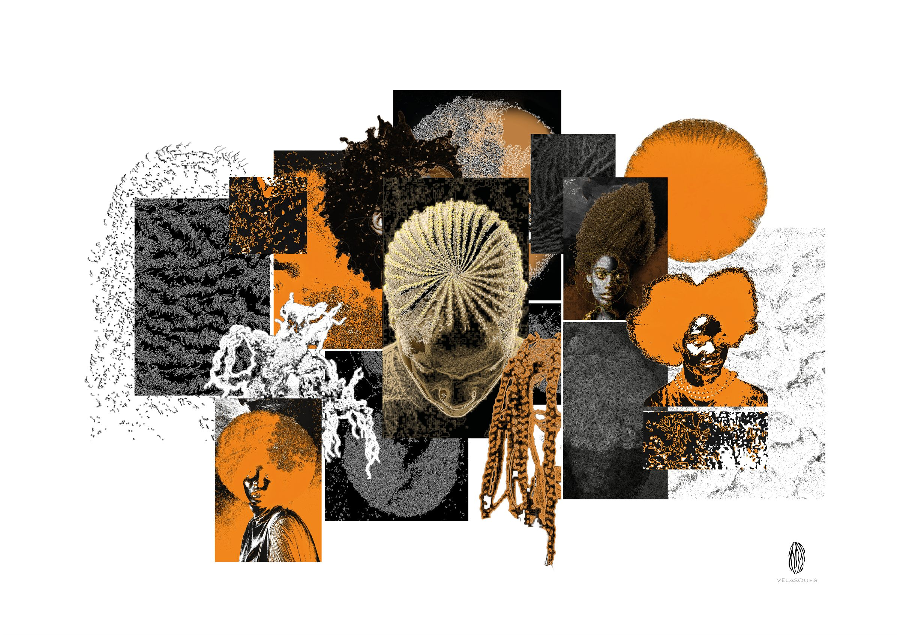
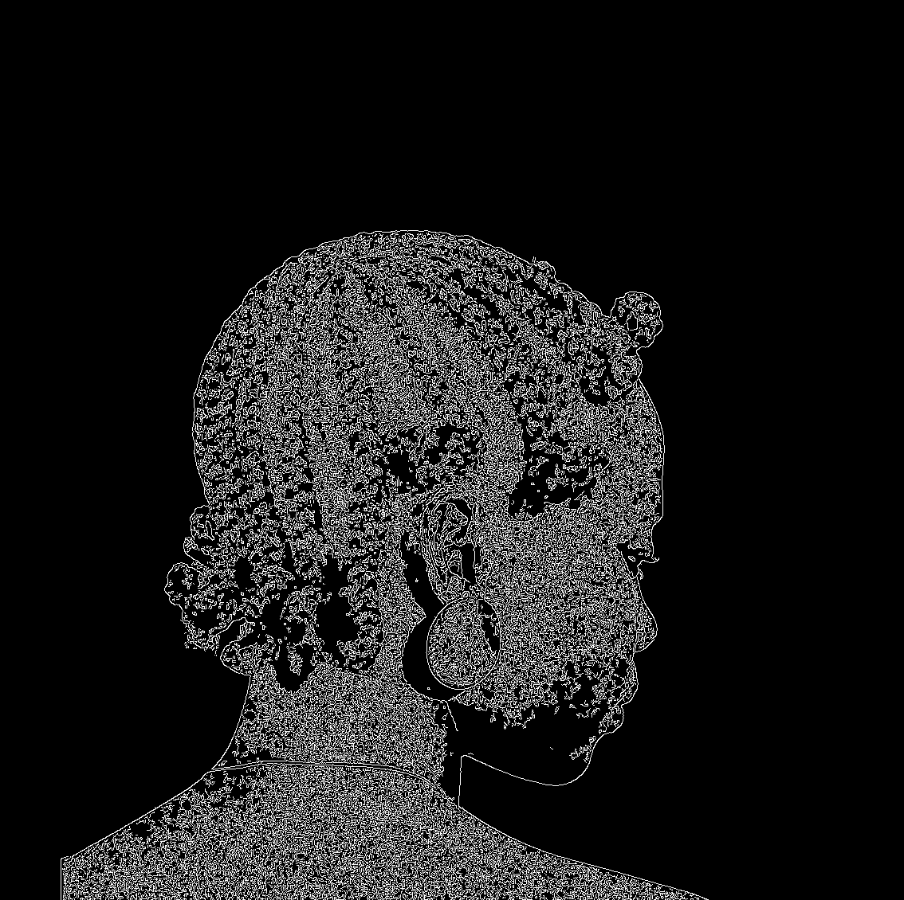
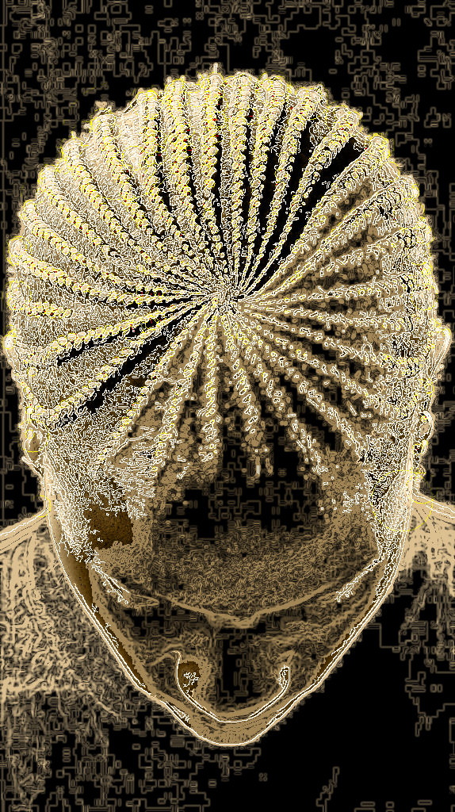
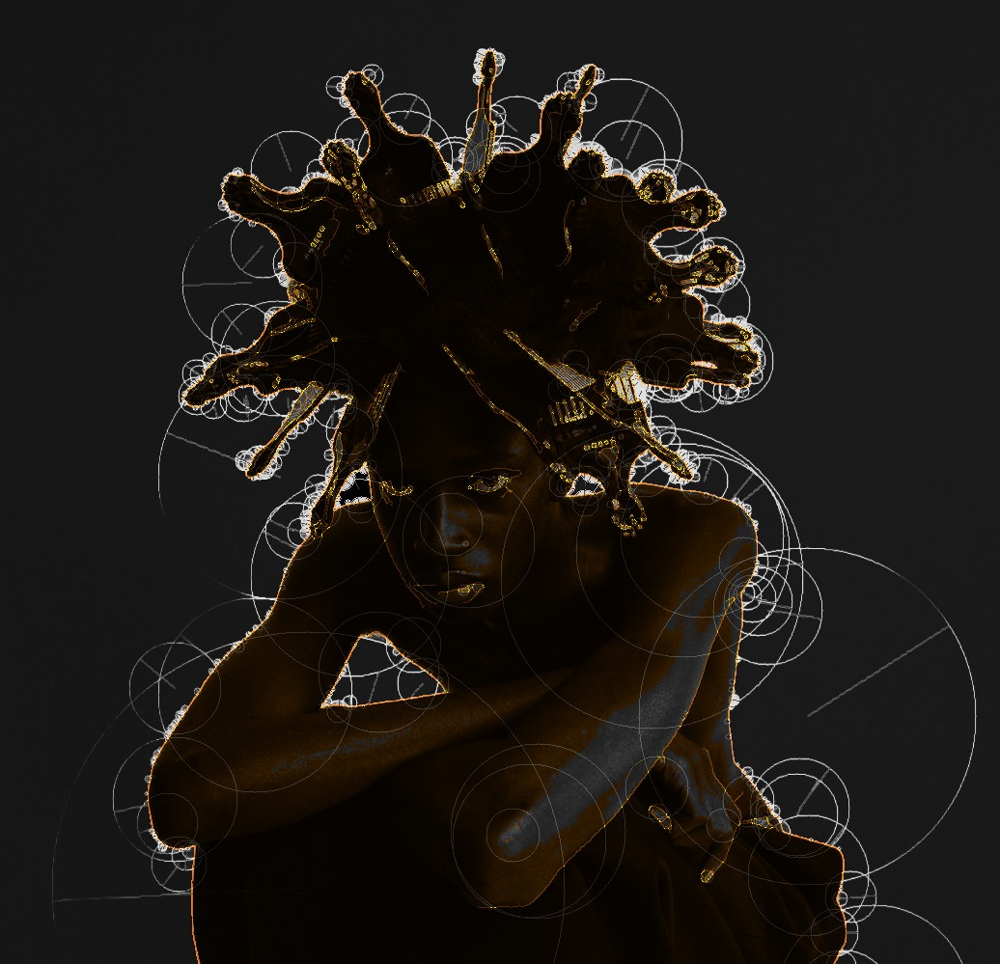
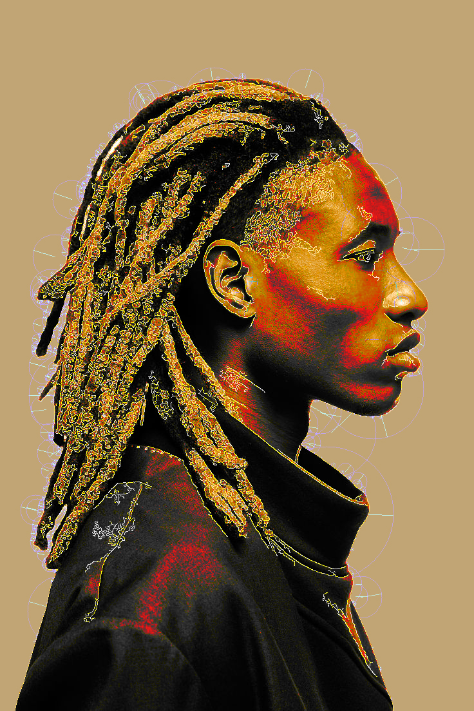
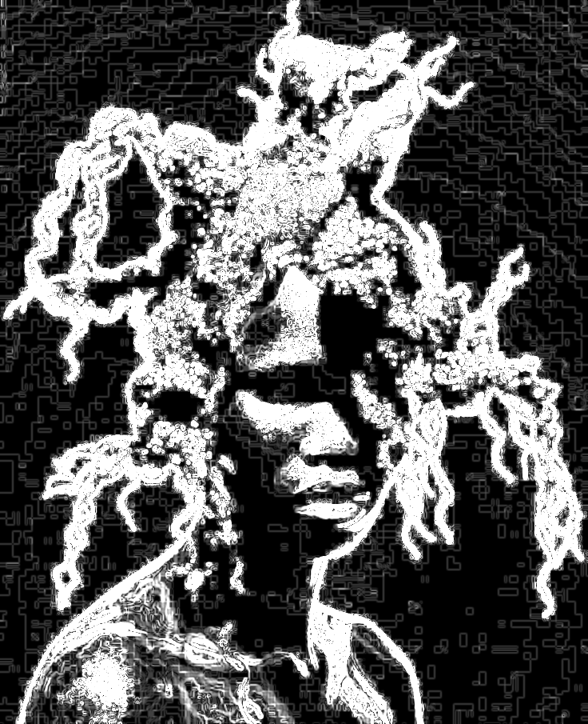
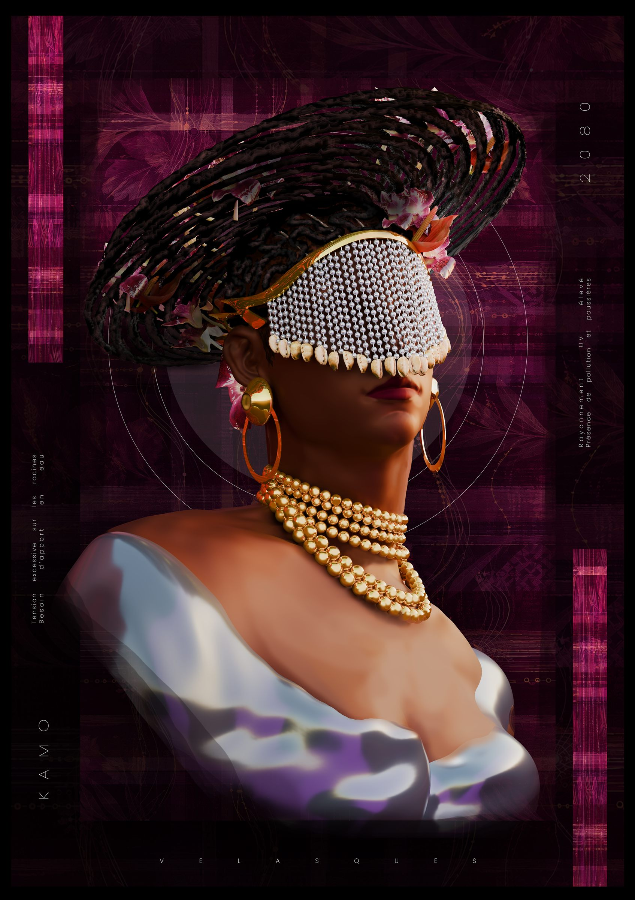

Projet d'étude · Recherche & design

Mon projet d'étude CHIVÉ (« cheveu » en créole) est un travail de recherche qui questionne les discriminations capillaires visant les cheveux crépus aux Antilles.
Ces discriminations, qui touchent de nombreuses personnes afro-descendantes, trouvent leur origine dans des stéréotypes et des imaginaires hérités de la colonisation. Ces représentations persistent encore aujourd'hui dans les sphères sociales et professionnelles, alimentant le rejet, le racisme et les inégalités.
À travers le design, mon objectif est de construire de nouvelles représentations du cheveu crépu, en explorant des créations visuelles et de nouveaux récits postcoloniaux. Que racontent-ils ? Que cachent-ils ?
Entre passé, présent et futur, je vous invite à parcourir CHIVÉ, conçu comme un laboratoire temporel consacré à l'analyse historique, esthétique et postcoloniale du cheveu crépu.
Une exploration guidée par une question centrale :
Quelle place voulons-nous donner au cheveu crépu dans les Antilles de demain ?
PasséMémoire et archives
CHIVÉ : QUE RACONTENT MES CHEVEUX
- Création
- 2026
- Durée
- 01:35
- Médium
- Vidéo, performance
CHIVÉ (« cheveu » en créole) est une invitation à considérer mon cheveu comme un territoire de mémoire. En tissant des archives visuelles, sonores et gestuelles, où se rencontrent les héritages africains, indiens, européens et caribéens, cette performance raconte l'histoire coloniale de mes ancêtres. Chaque geste et chaque couleur portent une symbolique forte, exprimant racisme, esclavage et métissage culturel.
Et vous, que racontent vos cheveux ?
PrésentLe regard du numérique






IA CRÉPU
- Création
- 2026
- Format
- 841 × 594 mm (A1)
- Techniques
- Production visuelle par lignes de code Python
Face à l'émancipation des outils numériques, j'interroge leur capacité à reproduire et à générer des formes de discrimination.
Peut-on utiliser les outils numériques qui reproduisent parfois des imaginaires coloniaux pour construire de nouvelles représentations du cheveu crépu ?
Ce premier travail de recherche, développé à partir de lignes de code en Python, explore la manière dont le numérique analyse et représente les cheveux crépus présents sur internet. Quelles formes retient-il ? Quelles caractéristiques révèle-t-il, transforme-t-il ou efface-t-il ?
À travers cette œuvre, je cherche à révéler la richesse structurelle, graphique et visuelle du cheveu crépu, dont certaines caractéristiques échappent à notre perception immédiate.
Et vous, lorsque vous regardez votre cheveu, que voyez-vous ?
FuturImaginer 2080

KAMO 2080
- Création
- 2026
- Format
- 841 × 594 mm (A1)
- Techniques
- Modélisation 3D Blender, photocollage, immersion auditive
- Prix
- 2 500 €
KAMO est l'un de mes premiers projets de design spéculatif. Le design spéculatif est une démarche qui consiste à imaginer des objets, des usages et des modes de vie possibles dans le futur afin d'interroger notre présent. À travers une approche inspirée du Caribbean Futurism et de l'afrofuturisme, ce projet imagine une évolution des pratiques capillaires aux Antilles, à la croisée des héritages culturels, des transformations environnementales et des nouvelles technologies.
Aujourd'hui, les pratiques capillaires sont souvent guidées par des normes esthétiques, où le cheveu crépu est considéré comme une matière que l'on doit discipliner, lisser, ou rendre conforme à une certaine apparence.
Et si nous apprenions à percevoir nos cheveux non plus comme une matière à maîtriser mais comme une présence vivante à écouter ?
KAMO 2080 représente une pratique capillaire de l'année 2080. À travers un langage de vibrations, KAMO permet de ressentir les besoins du cheveu et de les interpréter. Ces signaux deviennent une forme de dialogue, permettant d'identifier les gestes, les coiffures et les soins les plus appropriés pour son cheveu.
Et vous, quel héritage capillaire souhaitez-vous laisser aux générations futures ?